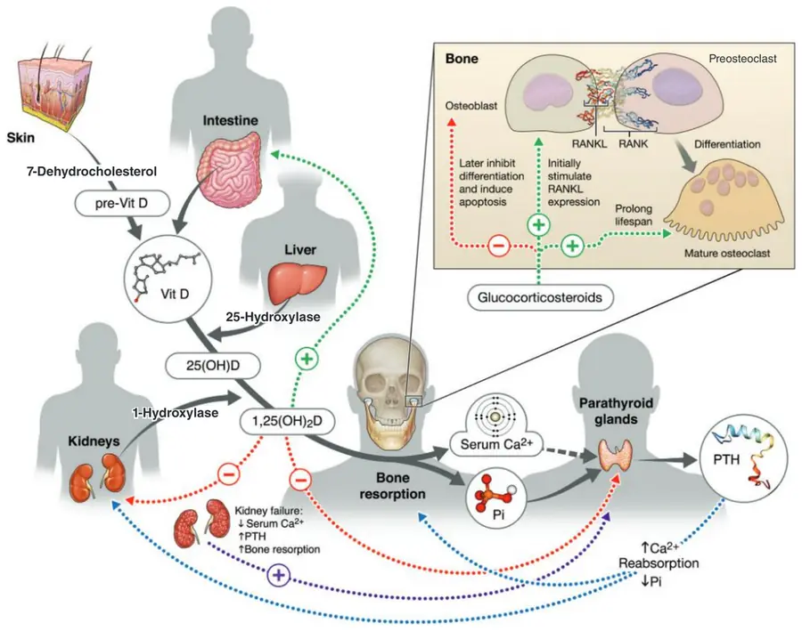
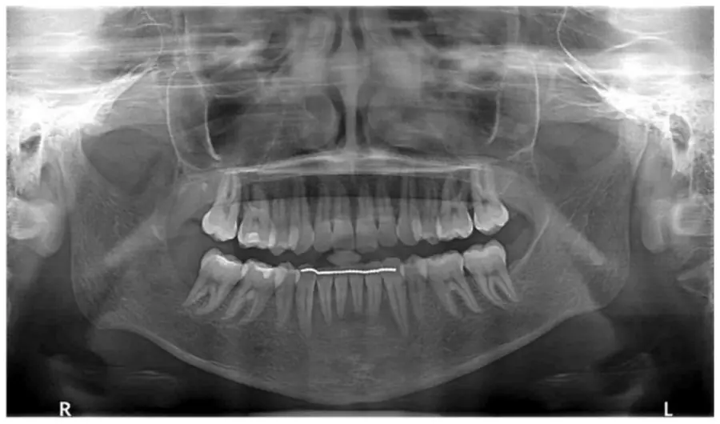

نسخه استخراجشده؛ ترجمه یا تأیید علمی انجام نشده است. وضعیت: captured
تا اینجا هر ضایعهای که دیدی یک اپیسنتر داشت. این یونیت دربارهی بیماریهایی است که اپیسنتر ندارند — کل استخوان را با هم عوض میکنند.

و اول یک هشدار: تغییرات ناشی از اختلالات غدد درونریز «معمولاً منتشر و اغلب غیراختصاصیاند. بنابراین ممکن است شناسایی این بیماریها تنها بر پایهی ویژگیهای تصویری دشوار باشد.» یعنی در این یونیت، تصویر مطرح میکند و آزمایش تشخیص میدهد.
و سه دسته تغییر عمومی که باید در فک دنبال کنی:
حالا راشیتیسم و استئومالاسی — دو نام برای یک اختلال در دو سن: راشیتیسم در کودک در حال رشد، و استئومالاسی وقتی همان کمبود، اسکلت بالغ را درگیر میکند. در بزرگسال، درد استخوانی، ضعف عضلانی، راه رفتن اردکمانند («گیت پنگوئنی») و تتانی دیده میشود.
و مسیر ویتامین D را بدان، چون چهار جای مختلف میتواند خراب شود: انسان پیشساز غیرفعال کلسیفرول را میخورد یا در پوست زیر UVB میسازد؛ سپس در کبد و کلیه به شکل فعال کلسیتریول درمیآید. پس بیماری میتواند از نبود آفتاب، کمبود غذایی، ناتوانی کبد و کلیه در ساخت کلسیتریول، یا سوءجذب گوارشی بیاید.
و یک زیرگروه جدا: راشیتیسم هیپوفسفاتمیک (که پیشتر «مقاوم به ویتامین D» نامیده میشد) گروهی از اختلالات وابسته به X است که در آن فسفات در توبولهای دیستال کلیه بازجذب نمیشود.
و امضای دندانی راشیتیسم — این را حفظ کن: مینای نازک و اتاقک پالپ و کانالهای ریشهی بزرگتر از طبیعی، هم در دندانهای رویشیافته و هم نرویشیافته؛ تأخیر رویش؛ مرز کورتیکال فولیکولها نازک یا غایب؛ و لامینا دورا نازک و کمپشت. اگر بیماری پیش از ۳ سالگی رخ دهد، هیپوپلازی مینا نسبتاً شایع است.
و یک زنجیرهی علیتی زیبا که باید بفهمی نه حفظ کنی: «استئیت رارفاکتیو ممکن است مکرراً و بدون علت آشکار رخ دهد، چون نقصهای عاج و اتاقک پالپ بزرگ میتوانند ورود میکروارگانیسمهای دهانی را تسهیل کنند و به نکروز پالپ بینجامند.» یعنی ضایعهی پریاپیکال در دندان بدون پوسیدگی، اینجا هم یک پرچم قرمز است.
هیپوفسفاتازی اختلالی ارثی و نادر است از کاهش فعالیت آلکالن فسفاتاز غیراختصاصی بافتی — آنزیمی که استئوبلاستها و اودونتوبلاستها میسازند و برای مینرالیزاسیون طبیعی استئوئید و دندان لازم است.

و سازوکارش زنجیرهوار است: آنزیم کم میشود ← پیروفسفات معدنی شکسته نمیشود ← پیروفسفات خارجسلولی انباشته میشود ← و پیروفسفات یک مهارکنندهی شناختهشدهی تشکیل هیدروکسیآپاتیت است. پس مینرالیزاسیون متوقف میشود.
و مهمترین نکتهی بالینی این درس — که مستقیماً به دندانپزشک مربوط است: «حدود ۸۵٪ این کودکان از دست دادن زودرس دندانهای شیری — بهویژه انسیزورها — و تأخیر رویش دندانهای دائمی را نشان میدهند.» و مهمتر: «یافتههای دندانی اغلب نخستین نشانهی بالینی هیپوفسفاتازی و تنها نشانهی اودونتوهیپوفسفاتازی هستند.» بیماری بر پایهی سن تشخیص شش شکل بالینی دارد، و شکل هموزیگوت که از دوران جنینی شروع میشود معمولاً در سال نخست زندگی کشنده است.
روی تصویر: اتاقک پالپ و کانالهای بزرگ، دندانهای هیپوپلاستیک و افتادن زودرس، ظاهر استئوپنیک منتشر، کورتکس و لامینا دورای نازک، و زائدههای آلوئولار ضعیف کلسیفیه.
و یک نشانهی جمجمهای که با کروزون اشتباه میشود: در کودکان بزرگتر، بسته شدن زودرس درزهای جمجمه فرورفتگیهای ژیرال روی جدول داخلی جمجمه میسازد که به آن «مس کوبیدهشده» (beaten copper) میگویند و جمجمه شکل براکیسفالیک میگیرد.
و استئوپروزیس — با کاهش دانسیته، بدون تغییر در تعداد دندانها، و لامینا دورای نازک.
و آنچه در فک میبینی: الگوی ترابکولار پراکندهتر، ناهمگونی بیشتر کورتکس، و نازک شدن کورتکس تحتانی مندیبل. و یک نشانهی بصری که در تمام این یونیت تکرار میشود: «برجستگی دندانها روی زمینهی استخوان دمینرالیزه» — دندانها همانقدر اوپک ماندهاند، ولی استخوان پشتشان کمرنگ شده است.
و درمانش: برنامههای ورزش تحملوزن، استروژن، کلسیم و ویتامین D؛ و در موارد شدیدتر بیسفسفوناتها و مهارکنندههای RANKL — همان داروهایی که میتوانند به استئونکروز فک مرتبط با دارو بینجامند.